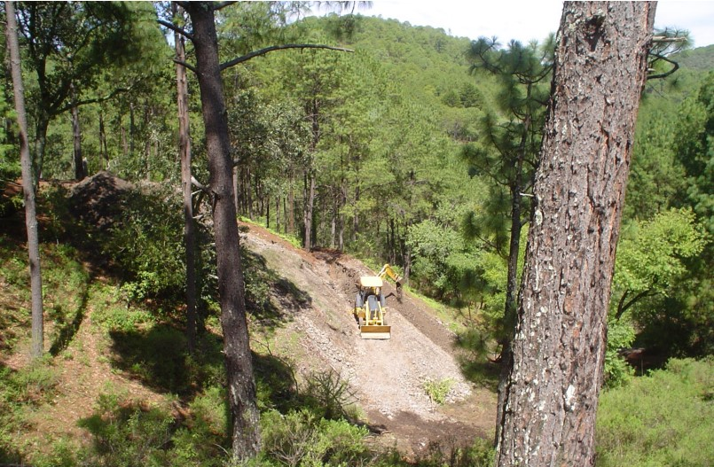

La minería es una actividad económica del sector primario cuando nos referimos a la extracción de minerales, y del sector energético si hacemos referencia a la extracción de combustibles fósiles. Es representada por la explotación o extracción de los minerales que se han acumulado en el suelo y subsuelo en forma de yacimientos. Dependiendo del tipo de mineral a extraer la actividad se divide en minería metalúrgica (cobre, oro, plata, aluminio, plomo, hierro, mercurio, etc.) que son empleados como materias primas básicas para la fabricación de una variedad de productos industriales. Mientras que la minería no metalúrgica o también denominada de cantera y construcción (arcilla, cuarzo, zafiro, esmeralda, granito, mármol, mica, etc.) son usados como materiales de construcción y materia prima de joyería, ornamentación, entre otros usos. Otro tipo de minería es la extracción de los minerales energéticos o combustibles, empleados principalmente para generar energía, como por ejemplo el petróleo, gas natural y carbón o hulla.
La mina se encuentra ubicada a un par de horas dentro del mismo estado de Jalisco. Nuestra mina se descubrió y trabajó desde la epoca colonial el cuál trajo grandes cambios a la minería mexicana. El principal mineral que se explotó por parte de los Españoles fue el oro, hasta los años iniciales de la cuarta década del siglo XVI cuando comenzaron a beneficiarse las primeras minas de plata descubiertas en Taxco. Pequeños hallazgos posteriores en diversas regiones de la Nueva España incrementaron la producción argentífera, hasta que al norte Zacatecas reveló sus inmensas posibilidades5. El aumento en la producción de plata se dio de manera exponencial, pudiendo ver en el labrar de la Casa de la Moneda donde en el año de 1700 sólo era de tres millones trescientos mil pesos; en el de 1750 llegaba ya a trece millones setecientos mil, y en el de 1804 ascendía nada menos que a veintisiete millones. 5 La producción argentífera mexicana fue en el siglo XVIII mayor que la del resto de América y casi igual a la producción mundial. A finales de la época colonial se creó el Real Cuerpo de Minería de la Nueva España, el cual promulgó las Ordenanzas Mineras y se abrió el Real Seminario de Minas.
El principal mineral que se explotó por parte de los Españoles fue el oro, hasta los años iniciales de la cuarta década del siglo XVI cuando comenzaron a beneficiarse las primeras minas de plata descubiertas en Taxco. Pequeños hallazgos posteriores en diversas regiones de la Nueva España incrementaron la producción argentífera, hasta que al norte Zacatecas reveló sus inmensas posibilidades5. El aumento en la producción de plata se dio de manera exponencial, pudiendo ver en el labrar de la Casa de la Moneda donde en el año de 1700 sólo era de tres millones trescientos mil pesos; en el de 1750 llegaba ya a trece millones setecientos mil, y en el de 1804 ascendía nada menos que a veintisiete millones. 5 La producción argentífera mexicana fue en el siglo XVIII mayor que la del resto de América y casi igual a la producción mundial. A finales de la época colonial se creó el Real Cuerpo de Minería de la Nueva España, el cual promulgó las Ordenanzas Mineras y se abrió el Real Seminario de Minas.
A lo largo de la vida útil de una mina se emplean distintas maquinarias, cuya elección dependerá de las condiciones del entorno, las características del yacimiento y la geometría de la explotación, y de sus requerimientos específicos.34 A grandes rasgos la maquinaria usada en la minería se divide en tres; equipos de carguío, equipos de transporte y equipos de servicio mina. La maquinaria de carguío tiene como finalidad cargar el material recién tronado y depositarlo en equipos de transporte o directamente en piques de traspaso, en el caso de la minería subterránea. Por su parte, el objetivo de las de transporte consiste en trasladar el material mineralizado y/o estéril desde el yacimiento hacia los posibles destinos, ya sea el chancado, stock de mineral o botaderos de estéril. Por último, los equipos de servicio mina cumplen una labor específica en la industria que puede ser el transporte de material de trabajo o de personal, movimientos de tierra y construcción de caminos, zanjas, taludes y petriles, y labores de perforación y carga de explosivos, entre otros. Dentro de esta maquinaria se encuentran los bulldozers, wheeldozers, motoniveladoras, camión aljibe, retroexcavadora, excavadora, jumbo de perforación, camión mixer, shocretera, roboshot y equipos de levante, entre otros.
Para explotar un mineral existen dos métodos: la minería a cielo abierto y la mina subterránea, siendo la primera la más común hoy en día. De acuerdo al investigador H.L. Hartmann en su ensayo Introductory Mining Engineering, la minería a cielo abierto produce el 85% de los minerales extraídos en los Estados Unidos, de los cuales el 95% de ellos corresponde a minerales metálicos.25 Dentro de la minería a cielo abierto se encuentra la de los depósitos placer o también denominados yacimientos de tipo placer, que consta de valiosos minerales contenidos en la grava de los ríos, arena de playa o en sedimentos producidos por aluviones, cuyo proceso de extracción varía en ocasiones a los empleados en las minas a cielo abierto.26 Chuquicamata en Chile, es una de las minas a cielo abierto más grande del mundo. Una mina subterránea se compone de varias galerías, cuya técnica de extracción puede ser por hundimiento o por caserones. En la imagen, la mina subterránea de caliza Beer Stone Quarry en Inglaterra. Sin embargo y en ciertas ocasiones específicas como en la extracción del uranio y de las tierras raras existen métodos poco comunes, tales como la lixiviación in situ. Ésta nueva técnica consiste en crear hoyos desde la superficie hasta el respectivo depósito, pero aun así no se considera como un método a cielo abierto ni subterráneo. Para llevar a cabo la lixiviación in situ se requiere que los minerales sean solubles en agua como por ejemplo el potasio, cloruro de potasio, cloruro de sodio y sulfato de sodio. Otros minerales como los óxidos de uranio y cobre necesitan soluciones de ácido o de carbonato para su disolución y posterior extracción.